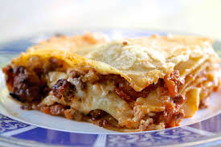

Lasagna

This here is the authentic Italian Lasagna Bolognese recipe (Lasagne alla Bolognese), the one you would eat in Italy in the best Italian restaurants.
The authentic traditional recipe of lasagna Bolognese is made up of three main preparations: fresh egg pasta (Lasagna Noodles), Bolognese Sauce (Ragu alla Bolognese) and bechamel.
Ingredients
For bolognese Sauce
- 300 g of coarsely ground beef
- 150 g of sliced pancetta (you can replace pancetta with minced pork)
- 300 g of tomato passata or crashed peeled tomato
- 1 small carrot (about 50 g)
- 1 celery stalk (about 50 g)
- 1 small onion (about 50 g)
- 100 ml of dry white wine
- 100 ml of whole milk
- 300 ml of meat broth
- 3 tablespoons of extra virgin olive oil
- fine salt
- freshly ground black pepper
For Lasagna noodles
- About 14 lasagna: you can make fresh homemade lasagna noodles following our step by step recipe: how to make Homemade Pasta
- Or you can buy authentic Italian flat lasagna, oven ready (no cooking or boiling necessary), made with durum wheat.
- Plenty of freshly grated Parmigiano cheese (at least 200 g).
For Bèchamel Sauce
- 1 liter of fresh whole milk
- 100 g of unsalted butter
- 100 g of all-purpose flour
- ½ teaspoon of fine salt
- freshly grated nutmeg
Steps
Bolognese Sauce
- First cut the carrot, celery and onion in very tiny pieces. The more the better. Set aside. Then cut the pancetta as finely as possible with a sharp knife or a food processor. Now place the minced pancetta in a saucepan. Cook on medium heat for about 5 minutes, stirring with a wooden spoon from time to time.
- Add the extra virgin olive oil and the finely chopped vegetables. Stir and cook over medium heat for 5 minutes, stirring. Then add the ground beef.
- Stir and cook for 5 minutes over medium / high heat. Now put the heat on high and add the white wine. Stir and let it evaporate.
- Finally add the tomato passata. Cover with a lid and simmer over LOW heat for about 2 hours. If the sauce dries too much during cooking, add a little meat broth. Towards the end, add the milk to dampen the acidity of the tomato. Season with salt and pepper. Bolognese Sauce is ready when you can see an oily, creamy sauce on the surface.
Bèchamel Sauce
- In a saucepan, melt the butter over low heat then add the flour - using a flour sieve - while mixing QUICKLY with a whisk. Cook for 30 sec/1 min stirring, so the flour becomes tastier and absorb the butter fats. The mixture of butter and flour is called roux and it should be a nice golden color. Now set aside and let it cool. Meanwhile heat the milk, without bringing to a boil.
- Pour the milk slowly over the roux, while stirring vigorously with a whisk to prevent the formation of lumps. When the milk is completely poured over the roux sauce, put the saucepan back on low heat. Keep mixing constantly, until you have a fairly thick consistency (about 10/15 minutes). The sauce is ready when it sticks to the back of a wooden spoon. Finally, add a pinch of fine salt and grated nutmeg to taste.
If you have used a whisk and stirred at supersonic speed you shouldn't have any lumps in the sauce. If any lumps form, beat them out with an immersion hand blender until they dissolve. You can make Besciamella ahead of time and keep in the refrigerator for ⅔ days.
The Layers
- Preheat the oven at 190° (380 F). Spread on the bottom of a baking dish (better ceramic or pirex) two tablespoons of bechamel. Then put a lasagna noodle over it, trying to cover the entire bottom of the pan. If one lasagna is not enough for you, use another one, whole or in half, depending on the size of the lasagna. Layer on two tablespoons of bolognese sauce and two of bechamel sauce.
- With the help of a tablespoon, cover the entire surface of the lasagna. In the end, sprinkle two tablespoons of grated Parmigiano.
- Repeat these steps for at least five layers (lasagna - bolognese sauce - bèchamel - parmigiano), in any case up to fill your baking dish.
- Finish by covering the last layer with plenty of Parmigiano cheese, that cooking make a crispy crust. Bake at 190° (380 F) for about 30 minutes.Let cool Lasagna Bolognese out of the oven for 10 minutes before serving.